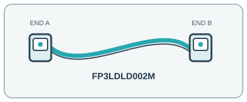

[ INDIVIDUAL COMPONENT // OPTICAL FIBER PATCH CORD ]
Belden FP3LDLD002M OM3 LC Duplex Fiber Patch Cord
A 2 m LC-to-LC OM3 jumper for matched 50/125 µm multimode Ethernet links.

IDENTIFICATION: Exact manufacturer model/SKU: Belden FP3LDLD002M. Connector fit alone does not establish electrical, optical, protocol or platform compatibility.
Product specifications
| Manufacturer model / SKU | Belden FP3LDLD002M |
|---|---|
| Product type | OPTICAL FIBER PATCH CORD |
| Connector/end types | LC duplex → LC duplex, two-fiber A-to-B polarity. |
| Fiber grade / Ethernet category | OM3 50/125 µm multimode, 2-fiber zipcord. |
| Length | 2 m; 2.0 mm × 4.0 mm zipcord jacket profile. |
| Bend radius and shielding | Aqua OFNR riser-rated jacket; dielectric fiber, not electrically shielded. Belden specifies minimum bend as 15× cable OD during installation and 10× OD in operation; the zipcord profile is 2.0 mm × 4.0 mm, so follow the manufacturer installation drawing rather than assuming a circular jacket diameter. |
| Speed / distance limits | OM3 supports 10GBASE-SR up to 300 m at 850 nm on a compliant channel. The 2 m patch cord does not establish the total link reach. 300 m is the OM3 10GBASE-SR compliant-channel maximum; optical link budgets and channel quality still apply. |
| Compatibility | Duplex LC OM3 multimode patch panels and 850 nm short-reach transceivers; confirm polarity and do not mate with single-mode or APC interfaces. |
Compatibility and handling
Duplex LC OM3 multimode patch panels and 850 nm short-reach transceivers; confirm polarity and do not mate with single-mode or APC interfaces.
Bend-radius note: 15× cable OD during installation and 10× cable OD in operation, per Belden; use the specified 2.0 mm × 4.0 mm zipcord profile and do not kink.
Shielding / jacket: Dielectric optical cable with aqua OFNR jacket; no conductive EMI shielding.
Inspect the jacket, strain relief, latch and end faces before use. For optical assemblies, keep dust caps in place and never look into a live fiber. For copper/active-end assemblies, avoid tight bends and cable crushing; validate PoE and device compatibility from the relevant port documentation.
Manufacturer sources and technical references
- Belden — FP3LDLD002M product recordExact SKU, OM3 grade, LC connectors, 2 m length and construction.
- Belden — FP3LDLD002M manufacturer catalog recordManufacturer catalog detail and mechanical data.
- Belden — OM3 distribution-fiber technical dataManufacturer OM3 technical and performance data.
Manufacturer sources are HTTPS. Limits quoted here are link/application limits: the installed cable channel, transceivers, connectors, port support and installation quality determine actual service. Confirm model revision and regional documentation before deployment.